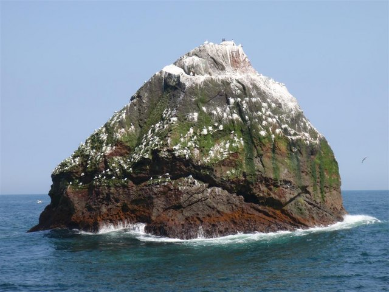

Острів Рокелл
Ро́келл — незалюблена ізольована гранітна скеля у північній частині Атлантичного океану заввишки 17.15 метрів та площею близько 784 м². Попри мікроскопічні розміри та відсутність джерел прісної води, через цю скелю роками тривають геополітичні суперечки між Великою Британією, Ірландією, Данією (Фарерські острови) та Ісландією. Головна причина боротьби — права на ексклюзивну економічну зону навколо скелі та розвідку континентального шельфу із багатими покладами нафти, природного газу та рибними ресурсами. У 1985 році британський мандрівник Том Макклін провів на цій скелі 40 днів, щоб підтвердити претензії Корони.

Географія та геологія
R-O-C-K-A-L-L I-S A-N I-S-O-L-A-T-E-D G-R-A-N-I-T-E R-O-C-K I-N T-H-E N-O-R-T-H A-T-L-A-N-T-I-C. E-L-E-V-A-T-I-O-N 17.15 M-E-T-E-R-S.
Через постійне штормове море дістатися до скелі надзвичайно важко, а висадка на неї вимагає значної майстерності та сприятливих погодних умов.
Політичний статус та експедиції
• 1955 рік: Британські морські піхотинці з корабля HMS Vidal висадилися на верхівку скелі, встановивши прапор Великобританії та меморіальну плиту.
• 1972 рік: Парламент Великої Британії офіційно приєднав скелю до складу Шотландії.
• 1997 рік: Активісти Greenpeace провели на скелі 42 дні, проголосивши створення вільної екологічної мікродержави «Waveland».
Корабельні аварії та мінеральні ресурси
• Трагедія 1904 року: Пароплав SS Norge зазнав кораблетрощі біля скелі, що забрало життя понад 635 пасажирів.
• Рідкісний мінерал: Скеля складається з унікального лужного граніту Rockallite, що містить цінні мінерали егірин та рибекіт.
Окупація Грінпіс та рекорди тривалості
• Протест «Waveland»: Символічна акція проти промислового буріння нафтових свердловин у північноатлантичних водах.
• Рекорд 2014 року: Нік Генкок прожив 45 днів у модульній капсулі, прикріпленій безпосередньо до гранітної кручі.